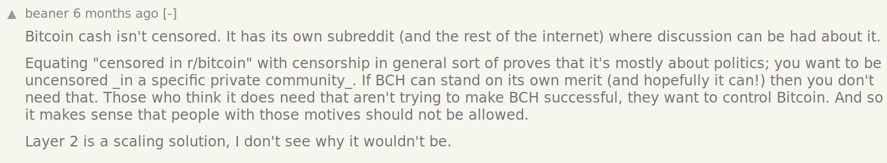
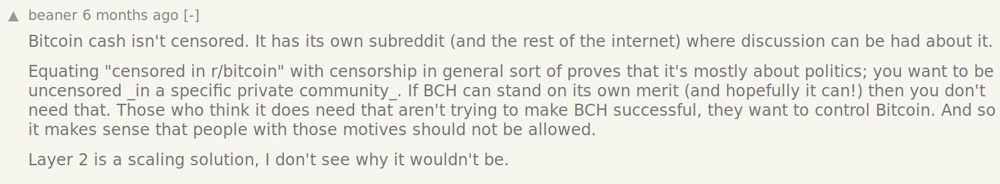
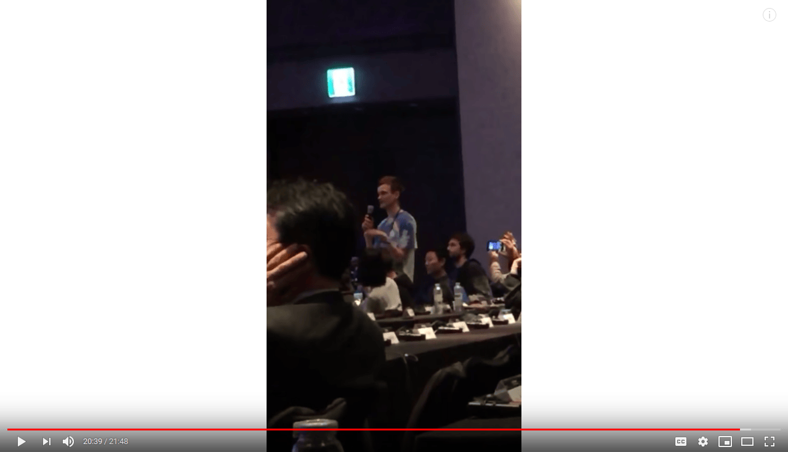
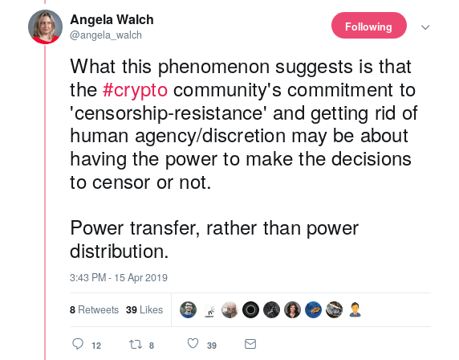

On Free Speech
2019 Apr 16
See all posts
On Free Speech
"A statement may be both true and dangerous. The previous
sentence is such a statement." - David Friedman
Freedom of speech is a topic that many internet communities have
struggled with over the last two decades. Cryptocurrency and blockchain
communities, a major part of their raison d'etre being censorship
resistance, are especially poised to value free speech very highly, and
yet, over the last few years, the extremely rapid growth of these
communities and the very high financial and social stakes involved have
repeatedly tested the application and the limits of the concept. In this
post, I aim to disentangle some of the contradictions, and make a case
what the norm of "free speech" really stands for.
"Free speech laws" vs "free
speech"
A common, and in my own view frustrating, argument that I often hear
is that "freedom of speech" is exclusively a legal restriction on what
governments can act against, and has nothing to say regarding
the actions of private entities such as corporations, privately-owned
platforms, internet forums and conferences. One of the larger examples
of "private censorship" in cryptocurrency communities was the decision
of Theymos, the moderator of the /r/bitcoin subreddit, to start
heavily moderating the subreddit, forbidding arguments in favor of
increasing the Bitcoin blockchain's transaction capacity via a hard
fork.

Here is a timeline of the censorship as catalogued by John Blocke: https://medium.com/johnblocke/a-brief-and-incomplete-history-of-censorship-in-r-bitcoin-c85a290fe43
Here is Theymos's post defending his policies: https://www.reddit.com/r/Bitcoin/comments/3h9cq4/its_time_for_a_break_about_the_recent_mess/,
including the now infamous line "If 90% of /r/Bitcoin users find these
policies to be intolerable, then I want these 90% of /r/Bitcoin users to
leave".
A common strategy used by defenders of Theymos's censorship was to
say that heavy-handed moderation is okay because /r/bitcoin is "a
private forum" owned by Theymos, and so he has the right to do whatever
he wants in it; those who dislike it should move to other forums:
 

And it's true that Theymos has not broken any laws by
moderating his forum in this way. But to most people, it's clear that
there is still some kind of free speech violation going on. So what
gives? First of all, it's crucially important to recognize that freedom
of speech is not just a law in some countries. It's also a
social principle. And the underlying goal of the social principle is the
same as the underlying goal of the law: to foster an environment where
the ideas that win are ideas that are good, rather than just ideas that
happen to be favored by people in a position of power. And governmental
power is not the only kind of power that we need to protect from; there
is also a corporation's power to fire someone, an internet forum
moderator's power to delete
almost every post in a discussion thread, and many other kinds of
power hard and soft.
So what is the underlying social principle here? Quoting
Eliezer Yudkowsky:
There are a very few injunctions in the human art of rationality that
have no ifs, ands, buts, or escape clauses. This is one of them. Bad
argument gets counterargument. Does not get bullet. Never. Never ever
never for ever.
Slatestarcodex
elaborates:
What does "bullet" mean in the quote above? Are other projectiles
covered? Arrows? Boulders launched from catapults? What about melee
weapons like swords or maces? Where exactly do we draw the line for
"inappropriate responses to an argument"? A good response to an argument
is one that addresses an idea; a bad argument is one that silences it.
If you try to address an idea, your success depends on how good the idea
is; if you try to silence it, your success depends on how powerful you
are and how many pitchforks and torches you can provide on short notice.
Shooting bullets is a good way to silence an idea without addressing it.
So is firing stones from catapults, or slicing people open with swords,
or gathering a pitchfork-wielding mob. But trying to get someone fired
for holding an idea is also a way of silencing an idea without
addressing it.
That said, sometimes there is a rationale for "safe spaces" where
people who, for whatever reason, just don't want to deal with arguments
of a particular type, can congregate and where those arguments actually
do get silenced. Perhaps the most innocuous of all is spaces like ethresear.ch where posts get silenced
just for being "off topic" to keep the discussion focused. But there's
also a dark side to the concept of "safe spaces"; as Ken
White writes:
This may come as a surprise, but I'm a supporter of ‘safe spaces.' I
support safe spaces because I support freedom of association. Safe
spaces, if designed in a principled way, are just an application of that
freedom... But not everyone imagines "safe spaces" like that. Some use the
concept of "safe spaces" as a sword, wielded to annex public spaces and
demand that people within those spaces conform to their private norms.
That's not freedom of association
Aha. So making your own safe space off in a corner is totally fine,
but there is also this concept of a "public space", and trying to turn a
public space into a safe space for one particular special interest is
wrong. So what is a "public space"? It's definitely clear that a public
space is not just "a space owned and/or run by a government";
the concept of privately
owned public spaces is a well-established one. This is true even
informally: it's a common moral intuition, for example, that it's less
bad for a private individual to commit violations such as discriminating
against races and genders than it is for, say, a shopping mall to do the
same. In the case or the /r/bitcoin subreddit, one can make the case,
regardless of who technically owns the top moderator position in the
subreddit, that the subreddit very much is a public space. A few
arguments particularly stand out:
- It occupies "prime real estate", specifically the word "bitcoin",
which makes people consider it to be the default place to
discuss Bitcoin.
- The value of the space was created not just by Theymos, but by
thousands of people who arrived on the subreddit to discuss Bitcoin with
an implicit expectation that it is, and will continue, to be a public
space for discussing Bitcoin.
- Theymos's shift in policy was a surprise to many people, and it was
not foreseeable ahead of time that it would take place.
If, instead, Theymos had created a subreddit called
/r/bitcoinsmallblockers, and explicitly said that it was a curated space
for small block proponents and attempting to instigate controversial
hard forks was not welcome, then it seems likely that very few people
would have seen anything wrong about this. They would have opposed his
ideology, but few (at least in blockchain communities) would try to
claim that it's improper for people with ideologies opposed to
their own to have spaces for internal discussion. But back in reality,
Theymos tried to "annex a public space and demand that people within the
space confirm to his private norms", and so we have the Bitcoin
community block size schism, a highly acrimonious fork and chain split,
and now a cold peace between Bitcoin and Bitcoin Cash.
About a year ago at Deconomy I publicly shouted down Craig Wright, a scammer claiming to
be Satoshi Nakamoto, finishing my explanation of why the things he
says make no sense with the question "why is this fraud allowed to speak
at this conference?"

Of course, Craig Wright's partisans replied back with.... accusations
of censorship:

Did I try to "silence" Craig Wright? I would argue, no. One could
argue that this is because "Deconomy is not a public space", but I think
the much better argument is that a conference is fundamentally different
from an internet forum. An internet forum can actually try to be a fully
neutral medium for discussion where anything goes; a conference, on the
other hand, is by its very nature a highly curated list of
presentations, allocating a limited number of speaking slots and
actively channeling a large amount of attention to those lucky enough to
get a chance to speak. A conference is an editorial act by the
organizers, saying "here are some ideas and views that we think people
really should be exposed to and hear". Every conference "censors" almost
every viewpoint because there's not enough space to give them all a
chance to speak, and this is inherent to the format; so raising an
objection to a conference's judgement in making its selections is
absolutely a legitimate act.
This extends to other kinds of selective platforms. Online platforms
such as Facebook, Twitter and Youtube already engage in active selection
through algorithms that influence what people are more likely to be
recommended. Typically, they do this for selfish reasons, setting up
their algorithms to maximize "engagement" with their platform, often
with unintended byproducts like promoting
flat earth conspiracy theories. So given that these platforms are
already engaging in (automated) selective presentation, it seems
eminently reasonable to criticize them for not directing these same
levers toward more pro-social objectives, or at the least pro-social
objectives that all major reasonable political tribes agree on (eg.
quality intellectual discourse). Additionally, the "censorship" doesn't
seriously block anyone's ability to learn Craig Wright's side of the
story; you can just go visit their website, here you go: https://coingeek.com/. If
someone is already operating a platform that makes editorial decisions,
asking them to make such decisions with the same magnitude but with more
pro-social criteria seems like a very reasonable thing to
do.
A more recent example of this principle at work is the #DelistBSV
campaign, where some cryptocurrency exchanges, most famously Binance,
removed support for trading BSV (the Bitcoin fork promoted by Craig
Weight). Once again, many people, even reasonable
people, accused this campaign of being an exercise
in censorship, raising parallels to credit card companies blocking
Wikileaks:

I personally have been a critic
of the power wielded by centralized exchanges. Should I oppose
#DelistBSV on free speech grounds? I would argue no, it's ok to support
it, but this is definitely a much closer call.
Many #DelistBSV participants like Kraken are definitely not
"anything-goes" platforms; they already make many editorial decisions
about which currencies they accept and refuse. Kraken only accepts about a dozen
currencies, so they are passively "censoring" almost everyone.
Shapeshift supports more currencies but it does not support SPANK, or even KNC. So in these two cases, delisting
BSV is more like reallocation of a scarce resource
(attention/legitimacy) than it is censorship. Binance is a bit
different; it does accept a very large array of cryptocurrencies,
adopting a philosophy much closer to anything-goes, and it does have a
unique position as market leader with a lot of liquidity.
That said, one can argue two things in Binance's favor. First of all,
censorship is retaliating against a truly malicious exercise of
censorship on the part of core BSV community members when they
threatened critics like Peter McCormack with legal letters (see Peter's
response); in "anarchic" environments with large disagreements on
what the norms are, "an eye for an eye" in-kind retaliation is one of
the better social norms to have because it ensures that people only face
punishments that they in some sense have through their own actions
demonstrated they believe are legitimate. Furthermore, the delistings
won't make it that hard for people to buy or sell BSV; Coinex has said
that they will
not delist (and I would actually oppose second-tier "anything-goes"
exchanges delisting). But the delistings do send a strong
message of social condemnation of BSV, which is useful and needed. So
there's a case to support all delistings so far, though on reflection
Binance refusing to delist "because freedom" would have also been not as
unreasonable as it seems at first glance.
It's in general absolutely potentially reasonable to oppose the
existence of a concentration of power, but support that concentration of
power being used for purposes that you consider prosocial as long as
that concentration exists; see Bryan Caplan's exposition on reconciling
supporting open borders and also supporting anti-ebola restrictions for
an example in a different field. Opposing concentrations of power only
requires that one believe those concentrations of power to be on
balance harmful and abusive; it does not mean that one must oppose
all things that those concentrations of power do.
If someone manages to make a completely permissionless
cross-chain decentralized exchange that facilitates trade between any
asset and any other asset, then being "listed" on the exchange would
not send a social signal, because everyone is listed; and I
would support such an exchange existing even if it supports trading BSV.
The thing that I do support is BSV being removed from already exclusive
positions that confer higher tiers of legitimacy than simple
existence.
So to conclude: censorship in public spaces bad, even if the public
spaces are non-governmental; censorship in genuinely private spaces
(especially spaces that are not "defaults" for a broader
community) can be okay; ostracizing projects with the goal and effect of
denying access to them, bad; ostracizing projects with the goal and
effect of denying them scarce legitimacy can be okay.
On Free Speech
2019 Apr 16 See all posts"A statement may be both true and dangerous. The previous sentence is such a statement." - David Friedman
Freedom of speech is a topic that many internet communities have struggled with over the last two decades. Cryptocurrency and blockchain communities, a major part of their raison d'etre being censorship resistance, are especially poised to value free speech very highly, and yet, over the last few years, the extremely rapid growth of these communities and the very high financial and social stakes involved have repeatedly tested the application and the limits of the concept. In this post, I aim to disentangle some of the contradictions, and make a case what the norm of "free speech" really stands for.
"Free speech laws" vs "free speech"
A common, and in my own view frustrating, argument that I often hear is that "freedom of speech" is exclusively a legal restriction on what governments can act against, and has nothing to say regarding the actions of private entities such as corporations, privately-owned platforms, internet forums and conferences. One of the larger examples of "private censorship" in cryptocurrency communities was the decision of Theymos, the moderator of the /r/bitcoin subreddit, to start heavily moderating the subreddit, forbidding arguments in favor of increasing the Bitcoin blockchain's transaction capacity via a hard fork.
Here is a timeline of the censorship as catalogued by John Blocke: https://medium.com/johnblocke/a-brief-and-incomplete-history-of-censorship-in-r-bitcoin-c85a290fe43
Here is Theymos's post defending his policies: https://www.reddit.com/r/Bitcoin/comments/3h9cq4/its_time_for_a_break_about_the_recent_mess/, including the now infamous line "If 90% of /r/Bitcoin users find these policies to be intolerable, then I want these 90% of /r/Bitcoin users to leave".
A common strategy used by defenders of Theymos's censorship was to say that heavy-handed moderation is okay because /r/bitcoin is "a private forum" owned by Theymos, and so he has the right to do whatever he wants in it; those who dislike it should move to other forums:
And it's true that Theymos has not broken any laws by moderating his forum in this way. But to most people, it's clear that there is still some kind of free speech violation going on. So what gives? First of all, it's crucially important to recognize that freedom of speech is not just a law in some countries. It's also a social principle. And the underlying goal of the social principle is the same as the underlying goal of the law: to foster an environment where the ideas that win are ideas that are good, rather than just ideas that happen to be favored by people in a position of power. And governmental power is not the only kind of power that we need to protect from; there is also a corporation's power to fire someone, an internet forum moderator's power to delete almost every post in a discussion thread, and many other kinds of power hard and soft.
So what is the underlying social principle here? Quoting Eliezer Yudkowsky:
Slatestarcodex elaborates:
That said, sometimes there is a rationale for "safe spaces" where people who, for whatever reason, just don't want to deal with arguments of a particular type, can congregate and where those arguments actually do get silenced. Perhaps the most innocuous of all is spaces like ethresear.ch where posts get silenced just for being "off topic" to keep the discussion focused. But there's also a dark side to the concept of "safe spaces"; as Ken White writes:
Aha. So making your own safe space off in a corner is totally fine, but there is also this concept of a "public space", and trying to turn a public space into a safe space for one particular special interest is wrong. So what is a "public space"? It's definitely clear that a public space is not just "a space owned and/or run by a government"; the concept of privately owned public spaces is a well-established one. This is true even informally: it's a common moral intuition, for example, that it's less bad for a private individual to commit violations such as discriminating against races and genders than it is for, say, a shopping mall to do the same. In the case or the /r/bitcoin subreddit, one can make the case, regardless of who technically owns the top moderator position in the subreddit, that the subreddit very much is a public space. A few arguments particularly stand out:
If, instead, Theymos had created a subreddit called /r/bitcoinsmallblockers, and explicitly said that it was a curated space for small block proponents and attempting to instigate controversial hard forks was not welcome, then it seems likely that very few people would have seen anything wrong about this. They would have opposed his ideology, but few (at least in blockchain communities) would try to claim that it's improper for people with ideologies opposed to their own to have spaces for internal discussion. But back in reality, Theymos tried to "annex a public space and demand that people within the space confirm to his private norms", and so we have the Bitcoin community block size schism, a highly acrimonious fork and chain split, and now a cold peace between Bitcoin and Bitcoin Cash.
Deplatforming
About a year ago at Deconomy I publicly shouted down Craig Wright, a scammer claiming to be Satoshi Nakamoto, finishing my explanation of why the things he says make no sense with the question "why is this fraud allowed to speak at this conference?"
Of course, Craig Wright's partisans replied back with.... accusations of censorship:
Did I try to "silence" Craig Wright? I would argue, no. One could argue that this is because "Deconomy is not a public space", but I think the much better argument is that a conference is fundamentally different from an internet forum. An internet forum can actually try to be a fully neutral medium for discussion where anything goes; a conference, on the other hand, is by its very nature a highly curated list of presentations, allocating a limited number of speaking slots and actively channeling a large amount of attention to those lucky enough to get a chance to speak. A conference is an editorial act by the organizers, saying "here are some ideas and views that we think people really should be exposed to and hear". Every conference "censors" almost every viewpoint because there's not enough space to give them all a chance to speak, and this is inherent to the format; so raising an objection to a conference's judgement in making its selections is absolutely a legitimate act.
This extends to other kinds of selective platforms. Online platforms such as Facebook, Twitter and Youtube already engage in active selection through algorithms that influence what people are more likely to be recommended. Typically, they do this for selfish reasons, setting up their algorithms to maximize "engagement" with their platform, often with unintended byproducts like promoting flat earth conspiracy theories. So given that these platforms are already engaging in (automated) selective presentation, it seems eminently reasonable to criticize them for not directing these same levers toward more pro-social objectives, or at the least pro-social objectives that all major reasonable political tribes agree on (eg. quality intellectual discourse). Additionally, the "censorship" doesn't seriously block anyone's ability to learn Craig Wright's side of the story; you can just go visit their website, here you go: https://coingeek.com/. If someone is already operating a platform that makes editorial decisions, asking them to make such decisions with the same magnitude but with more pro-social criteria seems like a very reasonable thing to do.
A more recent example of this principle at work is the #DelistBSV campaign, where some cryptocurrency exchanges, most famously Binance, removed support for trading BSV (the Bitcoin fork promoted by Craig Weight). Once again, many people, even reasonable people, accused this campaign of being an exercise in censorship, raising parallels to credit card companies blocking Wikileaks:
I personally have been a critic of the power wielded by centralized exchanges. Should I oppose #DelistBSV on free speech grounds? I would argue no, it's ok to support it, but this is definitely a much closer call.
Many #DelistBSV participants like Kraken are definitely not "anything-goes" platforms; they already make many editorial decisions about which currencies they accept and refuse. Kraken only accepts about a dozen currencies, so they are passively "censoring" almost everyone. Shapeshift supports more currencies but it does not support SPANK, or even KNC. So in these two cases, delisting BSV is more like reallocation of a scarce resource (attention/legitimacy) than it is censorship. Binance is a bit different; it does accept a very large array of cryptocurrencies, adopting a philosophy much closer to anything-goes, and it does have a unique position as market leader with a lot of liquidity.
That said, one can argue two things in Binance's favor. First of all, censorship is retaliating against a truly malicious exercise of censorship on the part of core BSV community members when they threatened critics like Peter McCormack with legal letters (see Peter's response); in "anarchic" environments with large disagreements on what the norms are, "an eye for an eye" in-kind retaliation is one of the better social norms to have because it ensures that people only face punishments that they in some sense have through their own actions demonstrated they believe are legitimate. Furthermore, the delistings won't make it that hard for people to buy or sell BSV; Coinex has said that they will not delist (and I would actually oppose second-tier "anything-goes" exchanges delisting). But the delistings do send a strong message of social condemnation of BSV, which is useful and needed. So there's a case to support all delistings so far, though on reflection Binance refusing to delist "because freedom" would have also been not as unreasonable as it seems at first glance.
It's in general absolutely potentially reasonable to oppose the existence of a concentration of power, but support that concentration of power being used for purposes that you consider prosocial as long as that concentration exists; see Bryan Caplan's exposition on reconciling supporting open borders and also supporting anti-ebola restrictions for an example in a different field. Opposing concentrations of power only requires that one believe those concentrations of power to be on balance harmful and abusive; it does not mean that one must oppose all things that those concentrations of power do.
If someone manages to make a completely permissionless cross-chain decentralized exchange that facilitates trade between any asset and any other asset, then being "listed" on the exchange would not send a social signal, because everyone is listed; and I would support such an exchange existing even if it supports trading BSV. The thing that I do support is BSV being removed from already exclusive positions that confer higher tiers of legitimacy than simple existence.
So to conclude: censorship in public spaces bad, even if the public spaces are non-governmental; censorship in genuinely private spaces (especially spaces that are not "defaults" for a broader community) can be okay; ostracizing projects with the goal and effect of denying access to them, bad; ostracizing projects with the goal and effect of denying them scarce legitimacy can be okay.